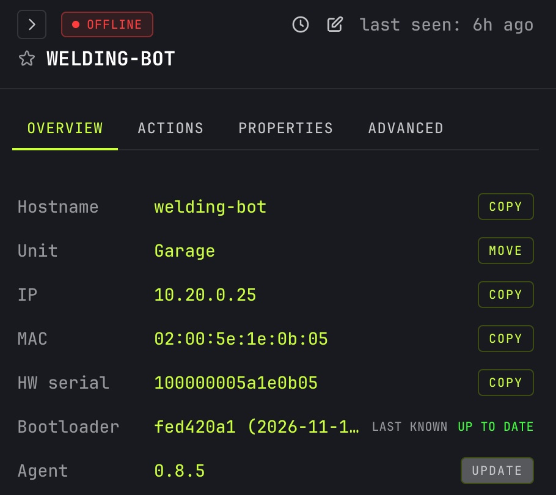

Backup, restore and upgrading the server
What to back up, where the restore and upgrade procedures are, and how to update agents.
Keep a self-hosted server recoverable and current. The commands are in the reference: BACKUP-RESTORE.md and INSTALL.md → Upgrading.
What to back up
Paths are as in the community compose file.
- The credential files in
secrets/. - The bootloader signing key,
data/eeprom-keys/privkey.pem. - The database, as a nightly encrypted dump (A scripted nightly dump), copied off the host.
- The key that encrypts your dumps, kept anywhere but the server.
- The
.envfile beside the compose file. - OS images and agent releases in
data/backend/storage/or your bucket. - With the
proxy-tlsproxy, its certificate storedata/proxy/acme.json. A local-network install has no certificate, anddata/proxy/stays empty.
Restore
The reference has two procedures, into the same install and onto an empty host, and the order of steps matters in both. Prepare an empty host by hand with the same release and DOMAIN, because the installer would create new keys and a new owner. Devices reconnect on their own when the restored server keeps the same name and keys.
Upgrade the server
The full procedure is INSTALL.md → Upgrading.
- Read
CHANGELOG.mdfor every release between yours and the new one. - Run the dump by hand and check your copies of
secrets/and.env. - Get the new release's files, run
chmod -R a+rX proxyin the install directory, and create any new credential file its compose file names. - Set
PLATFORM_VERSIONin.envto the new release. - Run
docker compose -f docker-compose.community.yml pull, thenup -d, and check that every container is up.
There is no downgrade across a schema change, so rolling back means restoring the dump from step 2.
Update agents on devices
The server hands devices the agent release you marked latest when you imported it (--set-latest). To update one node, open it and click Update in the Agent row on Overview, which works only while the node is online.

To update many, open Status → Attention, filter by Agent update available, select the rows and click Update agent. A node away at the time gets the update when it returns, and a node still finishing another command is held back until it is done.